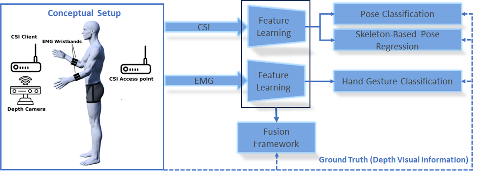
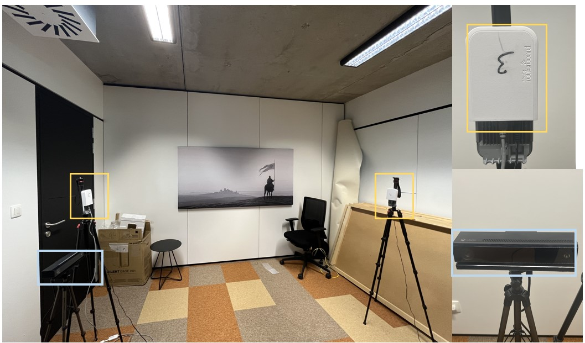

Multi-modal methodology.

Experimental environment.

Mobile extended reality (XR) applications are anticipated to generate substantial traffic for 6G. Such applications not only require high data rate and low-latency transmissions, but also accurate and real-time pose estimation to enable interactive and immersive experiences. While sub-6 GHz signals have been exploited for pose estimation, they cannot cope up with multi-gigabit data rates required by XR applications. Instead, mobile communications at mmWave frequencies can potentially support data rates up to several giga-bits per second (Gbps) and, therefore, can be used to deliver XR content wirelessly to the Head-Mounted Display (HMD). Moreover, mmWave frequencies can offer improved sensing due to the large available bandwidth. Therefore, mmWave communications can play a crucial role in enabling device-free interactivity by offering both high-speed communication and accurate sensing capabilities. However, mmWave propagation characteristics are different from sub-6 GHz. Path loss plays a significant role, and can lead to degraded sensing performance. Therefore, our proposal supplements wireless sensing at mmWave frequencies with wireless electromyography (EMG) armbands. By capturing patterns of muscle activities, we can counteract the limitations of mmWave-based pose estimation, thereby enriching the granularity and precision of pose estimation. This paper proposes a conceptual architecture to achieve multi-modal pose estimation for XR applications. Early results highlight the shortcomings of mmWave-based sensing, and we identify future steps and opportunities on integration of both approaches.
@inproceedings{bhat2023multi,
title={Multi-modal pose estimation in XR applications leveraging integrated sensing and communication},
author={Bhat, Nabeel Nisar and Sameri, Javad and Struye, Jakob and Vega, Maria Torres and Berkvens, Rafael and Famaey, Jeroen},
booktitle={Proceedings of the 1st ACM Workshop on Mobile Immersive Computing, Networking, and Systems},
pages={261--267},
year={2023}
}